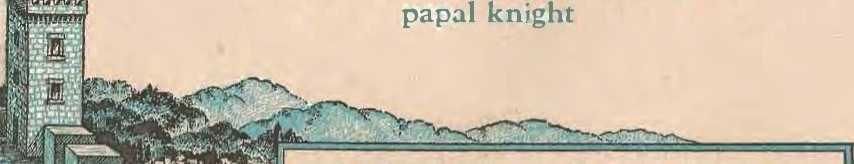
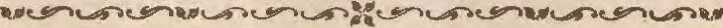

Do Vatican Crusaders Foment a Third World War? The facts of-iuedieval and modern crusades supply the answer
Mobocracy .Legalized in Iowa
Shocking conspiracy against democracy at Lacona exposed
"And There Shall Be Earthquakes"
Their increase an important sign to this generation
Von Papen, •Arch-Conspirator
Review of escapes of this treacherous -
THE MISSION OF THIS JOURNAL
News sources that a.re able to keep you awake to the vital issu.es of our times must be unfettered by censorship and selfish interests. "Awake!" has no fetters. It recognizes facts, faces facts, is free to publish facts. It is not bound by political ambitions or obligations; it is unhampered by advertsers whose toes must not be trodden on; it is unprejudiced by traditional creeds. This journal keeps itself free that it may speak freely to you. But it does not abuse its freedom. It maintains integrity to ttruth.
"Awake!" uses the regular news channels, but is not dependent on them. Its own correspondents are on al continents, in scores of nations. From the four corners of the earth their uncensored, on-the-scenes reports come •to you through these columns. Ths journal’s viewpoint is not narrow, but is nternational. It is read in many nations, in m.any languages, by persons of all ages. Through its pages many nelds of knowledge pass in review'—-government, commerce, religion, history, geogrnphy, science, social conditions, natural wonders—why, its coverage s as broad as the earth and as high as the heavens.
"Awake I" pledges itself to .righteous principles, to exposing hidden foes and subtle dangers, to championing freedom for all, to comforting mourners and strengthening those disheartened by the failures of a delinquent world, reflecting sure hope for the oota.b!oaliment of a righteous New World.
Get acquainted with "Awake!" Keep awake by reading "Awake!"
"-.ei^t.^^-.c_£’'~>^^U
PuDrrsnllP Sl!:wt:woNTHLY Dr WATCHTOWER BIBLE .AND TRACT SOCIETY, INC.
111 Adame Street Brooklyn 1, N, Y., U. S. A.
N. It KNOlUI., Prui^dllfte W. E. V.:UI AMliURGH. Scc7'dary
Five cents a copy One dollar a year
NOTICIl TO SUDSCKllERS
Rtmlttancu: !'leae.s rtmlt bY Pli<iM ll<ltv or hr P«a! or Mn^Mtr «to ten*
^rrUben :& :, currency Is loat io tlia ordlnory mmils. t.bere l.3 no redms. Remittances truot countries wbtro the ^i‘ety bA. m Bl'liMh o®?s my l» mdy w the Brooklyn office, but oolr by Jot.erniiilwnal postll money order. Be-CtYpt or a oow or rl!luwat .subi!Crlptlon pwil bo UdWawlod^d ooJy •ben rttiuest.cd.
Notice of expiration: Such notice is sent wlrltli the jnufnri at 1"'at !: isfr^ Intone (fa rub^ rtripefra exvIsw. Please rnnew promptly.
Cltange of address: 1‘lease send Any ehatti!C of addr= diroot to t& •Biber tbau to tbe poBL ciillce. iuwr rwittHt should rrjirtj tu at least thr<;c w<ek< before tbe dato: of isatle 'lrllb whlcb 1t Is to toke Jreet. Send )"Our old as won as tlto oow ;uld^..
Enltored u xoond<l^ matter at Brookbn, N. Y., Act of March S, 1879. Printed In U. a. A.
CONTENTS
Do Vutican Crusaders
World War ll a Vatienn CntsadE'
Vatican Ciusqders in Yug-oslavn
Vatican Chestnuts m the Ji'ire
Kxcommumiention 'l'ips Vatican's Haud
"And There Shall Be Earthquakes”
Increa'led Frequency of Earthquakes
"Thy Word (s Truth"
One Divorce for Every Three Marriages
Peter the Hermit, Typical Rabble-Rouser
"'l‘he Prince of Peace" Gladdeens Many Nations 25
Brooklyn, N. V., November 22, 1946
Volume XXVII
Number 708
DOES this world face a third WOridw world wad That question pops I up from all sides to J?lague war-weary humanity. Now, shortly after the close of World War IT, sides are already forming for a third test of strength, many believe. It is also strongly contended by many that if a third world war does break over the earth it will be a "holy war", a crusade, to borrow a word out of the dim past. To many the word "crusade" lifts war to an exalted level of holiness and godliness. I3nt to the informed it signifies the most bitter and ruthless of struggles. Why, the facts known by so many but appreciated by so few clearly mark the aggressive wars of this twentieth century as crusades. It will he to your lasting interests to alert yourself to crusades, past and present, and to awaken yourself to the subtle movements of tlie organizntioi that has always inspired them.
When Palestine was conquered by the Arabs in the seventh century they allowed the pilgrimages so popular with European “Christians”. In the tenth century the country came under Egyptian control, with a subsequent lessening of favor for pilgrims. But with the conquest of JeTnsalem in 1078 by Seljuk Turks fi’om the Caucasus, conditions became intolerable. News of atrocities hy the infidels spread over Christendom and kindled the desire for liberation of the Holy Land. Popes fanned the tense situation into the flmnes of war, for two reasons: the opportunity to increase their power in the "\Vest and to extend their power into the East; also it was an opportunity to turn tlie warlike ardor of the Western princes, so often jn conflict with the ehnreh, against the infidels. Pop’e Gregory VII conceived the idea of launching crusades, but it was Pope Urban II who lighted the fuse that touched off the successive explosions of religions wars that bloodied the earth from the close of the eleventh centurv til the close ♦
of the thirteenth century.
When the feelings of Europe had been sufficiently heated by the. papal-blessed rabble-rouser, Peter the Hermit, the first crusade took on definite form at a council in Clermont, France, in 1095. Pope Urhan II himself mounted the orators' soapbox and declared: "They who die will enter the mansions of heaven, while the living shall pay their vows before the sepulchre of the Lord. Blessed are they who, taking this vow upon them, shall obtain such a recompense." As this astute moh psychologist emoted nnd played on the tumultuous feelings of the vast crowd, cries of Deus milt (God wills it) broke from the audience. Urban made this cry the battle shout, and those who embarked on the venture wore the sign of the cross. lienee the name cTusade (French aroisaicle, from Latin crux, a cross).
Priests and abbots caught up the war cry tmd preached a crusade as a “'new mode of salvation, which eiiahled the layman without laying aside his habits of wild license to reach a height of perfection scarcely to be attained by the most austere monk or the most devoted priest". So from al parts of Europe thousands with priest and papal blessing flocked to the war drummed up by Urban 11. In successive waves undisciplined forces totaling some 275,000 began sweeping eastward in May of 1096, committing horrible ravages along the route, especially among the Jews, whom they murdered witliont mercy. These advance expeditions were soon slaughtered or scattered by the Bulgarians and Hungarians and Turb. But by this time the rea] armies of the Crusades made their appearance, seasoned warriors under chiefs of the first rank. By the }nm-dreds of thousands they marched eastward, finally taking Syrian Antioch after a very costly siege of months. During this time wind-jamming Peter the Hermit deserted, and was miles away before he was apprehended. War and famine and pestilence and desertion so fearfully thumed the ranks of the crusaders that by the time their objective, Jerusalem, was captured in 1099 they munhered only 40,000.
hen the city was finally taken a most horrible slaughter followed. ''So terrible, it is said, was the carnage wliicli followed that the horses of the crnsaders who rode up to the mosque of Omar were knee-deep in the stream of blood. Infants were seized by their feet and dasled against the walls or whirled over the battlements, while the Jews were all burnt alive in their synagogue.''(Ency-clopa;dia Britannica) Thus ended the first of a long series of crusades tliat were sponsored by the Vatican. Was that first crusade Christian f How preposterous to claim so I
During the 200 years that followed the Vatican inspired at least eight more major crusades. The most tragic and pathetic was the one in J 212. Imown as the Children's Crusade. The Hierarchy (’)aim was that innocent hands could wage the war with God's blessing; which was an admission that previous warring hands were neither innocent nor blessed. The result of this crusade was the hlood-g-uiJt of 50,000 children on Vaticun skirts, since that number either died on the trek to .Asia or fell into the more fearful horror of the slave market. Djd Catholic Hitler ever perpetrate a worse crime? The superstitions, hocus-pocus rituals practiced in dimly lit Catholic cathedrals will never ntone for the Vatican's wanton slaughter of millions.
From this period of the Crusades skip down the stream of time three centuries. By this time Germany has been split by the Reformation, ancl religious freedom has begun to dawn with what is now recognized as tlie birth of modern democracy. In papal eyes this was as deplorable as inlidcl occupancy of .Jerusalem; so they whipped up what a:monntcd to another crusade. This time tile ''Church sword" brandished was Ferdinand II, sharpened by Jesuit education and directed by an oath to erlerminate Prot-testants. He eamne into power in 1617, persecutions began, and in 1618 tbey blossomed out into a religious war that stormed over Europe for thirty years hl a vain Hierarchy effort to beat back tlie advances made by the Reformation ou the freedom front. Yes, vain; becau.se the Thirty Years’ -W.ar ended in Protestant victory and the Peace of Westphalia, concliideU at Miinster in 1648. The oj>pressive Hierarchy lias fought this peace ever since, because "an age of greater toleration was introduced into Germany. In all religio\is questions the Protestan ts secured an equality with tlie Catholics, mid gained eqnaJ weight in the diet and high courts. o_f the empire". —M'CUutock and Strong's Oyclopa:dia.
But now the river o£ time plunges us into onr own twentieth century and becomes a churning torrent of destructive events. Through the raging rapids of 'VorJd War I the Vatican, outwardly pretending impartiality, stdes in with the Dreibund to crush freedom. World statesmen were well aware of thiRi and hence specifically baned Jier from the peace negotiations. Thereafter she made league with Catholic dictators to smash the freedom gained by the Information and the Peace of W estphalia, to reestablish the Holy Homan Empire and the Dark Ages rule of cl arch and state.
Do yon ball; at believing that7 Then honestly consider: Alfred Rosenberg, once the chief Nazi ideologh;t, declared iit 1942 that the Germans must helieve that World War II was "another Thirty Years' War”. Not in length, of course, hut in issues involved. Do von remember that when the armistice was signed with France in 1940 H.Xactiiig arrangements were made that it should be done in the same car and in tbe same forest clearing used for the signing of the 1918 armistice r There Hitler made a bombastic speech about the righting of great wronga, wrongs committed in that same car, in the same clearing in the forest of Compiegne. Appropriate tliat they be righted on tlte same spot committed, Hitler screeched. But note how parallel reasoning dictated the Nazi choice for the final treaty ending \Vorld War II, if she triumphed. Das Schwarze Korps, official Nazi organ, in reporting tlie armistice proceedings with France, said Hitler had decided that the final treatv would be signed in Munster and known as the Treaty or PE’ace of Westphalia! There Crusader Hitler would right the wrongs and erase the smirch of the first Peace of Westphalia that ltas galled the Hierarchy for three hundred years!
Do you still hesitate to believe'? Per. haps you did not read in the New York Times, in 1940, the following: “The German war aims were outlined tonight as n re-establislunent of the Holy Homan Empire by Dr. iDrhnund A. Walsh, regent of the Foreign Service School of Georgetown University l Jesuit university near Washington, D. C.] ... Dr. Walsli said that he had heard Adolf Hitler say that tlie Holy Roman Empire, whicli was a Germanic empire, must he re-established."
Let any wavering hesitancy to believe be overwhelmed by honest refection on these questions: Why did the Vatican make a concordat with Catliolic Mussolini and bless his rape of E thiopia 1 Why did it side in with and bless Butcher Franco in his slaughter of Spanish democracy 1 Wliy did it make a concordat with Catholic Hitler and its conferences of bishops bless Nazi troops in the wad Why was the collaborationist J>e-tain lauded rs a •'good marshal" and anti-Semitic laws of Hierarchy origin inaugurated l Why did Cardinal Innitzer fly tbe Nazi swastika over his cathedral to celebrate Hitler's taking over of Austria? Why did Catholic Hitler put the Catholic priest 'fiso at the head of the puppet regime in Slovakia? Why did Catholic priests on mobile truck-churches follow Hitler's legions into Poland aiid on into Russia to consolidate Axis gains f Why did the Vatican espouse the cause of Axis-partner Japan in its invasion of China'! and also recognize the Japanese-sponsored government of the Philippines instead of United States claims! These questions so embarrassing to the unblushing Vatican could be piled np sky-high, but let them be summarily capped by one raised by recent eveuts: Why did the Hierarchy's precious Archbishop Stepinatz align himself with Pavelitch's regime in Yugoslavia under Hitler pro-tectiou and maneuver the murder of scores of thousands in a. modern Vatjcan crusadeY
When Catholic Mnssolini hurled his armies across the Mediterranean sea and into helpless Ethiopia the Hierarchy gloated and 57 bishops and 19 archbishops telegraphed thanks to the crusading dictator: "Catholic Italy thanked Jesus Cluist for the renewed greatness o£ tlte country made stronger by Mussolbri’s policy." Cardinal Seltnster, close friend of the then pope, Pius XI, chimed in: "The Italian fag is at this moment bringing in triumph the cross of Clirjst to Ethiopia to free the road for the emancipation of the slaves, oponing it at the same time to c.mr misHionai'Y propaganda."
Aft^r tbe Vatican's secret agreement or concordat with Fascist .Mussolini in 1929, another' "CJiurch sword" with a crusade complex was welcomed to the fold. The event was marked by the secret concordat negotiated with Nuzi Germany, in 1933. This “sword" was later un-sheatlied and set to its bloody work wli on the Hierarchy wailed that Spain should he saved from "Communism". That papal-styled ''fine Christian gentleman", the Butcher Franco, was crusading all alone against atheism; so in came tbe legions of his Catholic comrades Hitler and Mussolini and together they buteh-ered hundreds of thousands of lionest Catholics along with the new Spanish democratic government set up by the people.
The prelimiuary dress rehearsals over. the time bad come for the curtain to rise on the major crusade hy the Catholic dictators. The admittedly Catholic Hitler Jaunclied his blitzes with stunning speed and power, und in their wal\e the Hierarchy prospered. Clmrch spokesmen were not slow to voice their gratitude. An Associated Press dispatch of Angnst 27, 1940, reported; "A pledge of loyalty to Adolf Hitler by the German Catholic Bishops Conference at Fulda is to be read to the faithful from pulpits at the end of the war, D.N.B., oiTirial news agency, said today." In Jnne, J 941: ''The German Catholic episcopate torlny seut to all dioceses a message describing the war against Russia as a battle of Christianity all over tlje world." (New York Times) In November, 1941 : "A pastoral letter sni<l to have been issued bv the Bishop of Munster, Count Clemens von Gnllen, condemning Soviet Russia and conuuending the 'Christian soldiers of Germany' for their fight against the Soviet Union. has caused widespread interest in Berlin."—New York Times.
And what did we hear from tlte Italian eviscojjate itself7 Archbishop Mnrgotti oi Italy blessed the crusaders thus: ('Italy lias joined tbe anti-Bolshevik front with enthusiasm nnd faith of the ancient crusaders, proving that Italian soldiers are ready to give their blood generously for civilizntimj's victory against atheism and harbarism. Therefore, we also iiivite all good Catholi.es to raise insistent prayers to God to concede triumph to the new order and justice/' "Today we salute and bless the Italian legious who are marching with their allies in the common struggle to ope.n the immense inison which encloses the Russian population:' (From the New York Daily Neirs of July 21, 1941, and the New York Times of July 21, 1941) The Fascist press termed the. war a "Christian crusade against the Russian atheists".—Kansas City Star, June 8, 1942.
The facts of World War II cry out that everywhere the Nazi military juggernaut rolled in triumph there came in its wake persecutions nf Masons and Protestants and Jews; Jews especially, as it was in the first Catholic crusades and the Inquisition and many of the Yatican>s antiSemitic decrees. Jesrtit fingerprints in blood convict the Hierarchy of conspiracy with the Catholic dictators during World W ar II. liany more facts could be called to testify in proof thereof, but let this one close tbe case for the time: '(Considerable Catholic missionary activity in the occupied South Russian teni-tories is reported by the Catholic newspaper Ultolia, of Milan, arriving here today. The leader of the missionaries is Luigi Cardinal Lavitrano, archbishop of Palermo."
Agitation to Revive the Crusade
Tbe Catholic dictators Hitler and Mussolini failed their master at Vatican City. World War IT's crusade into Russia ended as disastrously as did those long ago against the infidel Turks. But the wily Vat:ic;an and its slippery Jesuits have survived major political reverses before, and its double talk and outward sham of neutrality during the past global war are paying off, thanks to^a cowardly and senrile press in democratic lands. Millions have even been convinced that they sbould ignore the facts of Hierarchy action during the war and swallow unquestioningly all the propagainda that now floods out from Vatican mouthpieces. Her diabolical cunning has even enabled her to emerge from the war she fomented stronger than ever, though her side suffered military defeat. And now she busily plans and agitates for a revival of her crusade against atheistic Russia, only this time she seeks to dub the democracies as her crusading "swords''.
There are 38,000 Catbolic priests in America who, by their consecration swear allegiance to papal Rome. In their churches they preach the "red scare”. By their efforts they bind the spineless Protestant and Jewish religious organizations to their crusade chariot and even have these groups seeing and pTeaching "red". Catholie politicians and Jesuits in key governmental positions point the accusing finger and yell "Red!" at any other ones in government not sympathetic with the Vatican. This bas a tremendous effect on the foreign policy of the United States.
Throughout the educational systems and social organizations of the country the Hierarchy propaganda lias been infiltrated. Some of the loudest cries of
"red" have been hurled at labor unions. For example, read the following report from the Se-ptemheT 23, 1946, issue of the Courier-Post, of Camden, N. J.:
"It is the solemn duty of every Christian labor unionist to attend union meetings, expel the Couummists and assist in a crusade to reduce to impotency the monster of Communism. That ChaJlenge was thrown down yesterday by Bishop Eustace, before nearly 5,000 members of the Holy Name societies. . . . CaUing all men of the diocese to ,join a crusade to wipe out Communism, Bishop Knstace warned there can be 110 peace in the world of labor or the world at large until atheisticism is discredited."
This.cry for a purging crusade against "reds" in labor unions was thereafter taken up by Willian Green, president of the American Federation of Labor.
What is happening in tlie United States of America is also happening in many other lands where the Catholic Hierarchy has any power. The Vatican engineers are working overtime to whip up anothru: crusade against Hnssia, not so much because Russia is atheistic, because the Vatican herself has htuned and otherwise destroyed unnumbered thousands of Bibles in her time. She aims her attack toward Russia because Russia's eyes are wide open to the Vatican's collaboration with tlte Axis and becmiise the Vatican wants to forcibly "convert" atheistic Rnssia to Catholicism to increase her wealth and power and attain world domination. In Europe the Hierarchy is busy organizing for the coming fray. Catholic political parties, such as those in Anstria, Italy, Franee, Belgium, Germany anrl Holland, have adopted catchy names like ((Christian Democrat'' and seek to set up governments of Vatican design. Nazism may be gom. in name, but only in name.
In September and October of 1946 the Vatican's crusade complex was cast in brilliant light. So, along with the rest of the world, focus gaze on events occurring in Yugoslavia during that time; but, unlike so much of the world, look at the realities stripped of their distortion by crooked Vatican tongues that are professional emotionalizers. It is a ease of clerics reaping the harvest of what they had previously sown, only not yet in fullness.
When Hitler's troops took over Yugoslavia and set np a puppet regime, that regime was resisted by large sections of Yugoslavia's predominantly Orthodox Catholic population. Roman Catholics under priestly direction crusaded against the 01’thodox Catholics, and did so under Hitler's protection. But now that their protector is gone and a new government has supplanted the Nazi puppet clique, the collaborationists are being rounded up. And, milike many governments of tlis religionized old world, the Yugoslavia rulers did not think black robes were sufficient to hide blackei' deeds. Catholic clergymen were tried along with others, and to tbe13e the evidence said: ''In thy skirts is found the blood of the souls of the poor imoeents."—Jeremiah 2 : 34.
Among these “bloody skirts" rounded up was tlie Yugoslavia archbishop, Step-inatz. He was taken into custody on Septembet 18, charged with "crimes against the people". Fifteen other defendants, all priests or Franciscan Friars, were ulso tried. The evidence brought out at tlie trial was overwhelming in showing that during the forr years of occupation the Hierarchy forces worked with the terrorists, known as ''Ustashin and “Crusaders”. Indisputable evidence proved the Hierarchy responsible for forced conversions of Serbs to Roman Catholicism, responsible for mas-sncres of thousands of Orthodox Seibs, and proved that Catholic priests made conversions at the point of pistols. Catholic priests of Stepjnatz' diocese "personally incited the Ustashi to mass killings, and in some instances the Catholic priests themselves, with their owu hands, participated in the slayings". For example, in the village of Blagaj, a Catholic priest named Blaza Tornljenovich ordered 520 persons killed on May 6, 1941. Today their dead bodies lie buried in two large pits near his church. And what is noteworthy, most of the witnesses at the trial were Croatian Catholic peasants or laborers.
Archbishop Stepinatz on the stand was insolent in the face of these eharges and refused to miswer questions. It was the safest way for him to avoid a slip of the tongue. His defense was, f,:M:y conscience is clear.'' He repeated that many times during the trial, maybe to convince himself. When confronted with photographs of himself attending the banquets of the Ustashi he responded: "I see no reason not to go to ceremonies when I'm aslted. My conscience is cam" To which the president of the court observed, ‘‘You must have a very loose conscience if you could be in the company of such people." The Bible calls such a conscience ''seared". As to his blessing of the Ustashi and Crusaders, Stepinatz retorted: "I give my blessing to all who ask." When queried as to whether that included criminals he repljed, "Every one has the right to get blessings/' On that basis he would bless the Devil himself. When greeted by his alleged report to Pope Pius XII, sent in 1944, and defending the Nazi puppet state of Croatia as "in conformity with Catholic interests and against the Orthodox Church and Communism", Stepinatz would not deny he sent it.
On October 16 Stepiuatz was convictecL on all fourteen counts of the indictment. Twelve of the counts related to activities with the Ustashi regime of Pavelitch, foremost YugosJav quisling, in which he was Charged with active collaboration with the Axis. The other two counts i‘e-lnted to activities since the end of tie
war, when he supported Ustashi leaders and Crusaders (Ustashi terrorist bands). Ever the opportunist, the Vatican seized upon the trial and conviction to scream "Persecution of tie church by godless Communists!" She said, "There is the appeal to pubHe opinion." But this appeal did not ring out iii clear tones to refute the charges or meet tlie issues raised. It was, ''Monsignor Stepinatz is a criminal only as far as the Catholic Church, the church of Christ, n- criminal.” Fine words for emotional effect, but of no force to thinkers who can digest facts. rhe remark might even convict Stepinatz in the minds of those who remember the criminal record of the Hierarchy during the Dark Ages, tbe Crusades, the Inquisition and Its “court trials" that were such a travesty of justice, and papal cri.J.nes with the modern dictators tliat pile up so higli.
Nonetheless, the wily Vatican judged the mentality of many of its Catholic population correctly, and, fanned by priests and bishops aud archbishops and cardinals, the \vail of protest that rises fTom many parts of the earth is loud and insistent. Spellman toyed with rhetoric in denouncing the "satanic. Soviet sycophants)) and the "perfidious pattern of Communist godlessness, barbarism and enslavement''; and warned Americans of the Red danger in their land. (In case you've forgotten, Cardinal Spellman is the one so infatuated with Frnnco the Butcher’s beautiful eyes and Chiis-tlan character.) Catholic papers in America took tlie cue obediently, one f saying: “U the moral sense of our government is so blunted and its sense of appeasement is so strong that it fails to rise to the occasion, what hope can tliere be that the reign of terror the Red totalitarians have inaugurated will be curbed iu the foreseeable future?" This article agitating for a crusade against liussia by the United States was titled "America on TriaV3.
Joining in the cries for other governments to pull the Vatican chestnuts out of the Yugoslavia fire, Catholic press leaders sent a message to Tniman urging him to protest tlte trial of Stepinatz. Also, 600,000 Knights of Columbus representatively through Supreme Knight J olm Swift demanded that the state department of the United States protest to Yugoslavia. Cardinal Strich, of Chicago, called for Unjted States intervention. Similarly, in Britain Cardinal Griffin appealed to the British government to involve itself 01 Stepinatz' behalf. As a result of the agitation Dean Acheson, acting secretary of state in the United States, expressed "concern and deep worry" over the trial. Politicians should remember tliat despite Vatican howls tlie government of Yugoslavia was trying a collaborator for his personal acts, and not the Catholic Church; which point Yugoslavia, from Tito on down, has repeatedly stressed.
But let us tune out the Vatican's rabble-rousing speechmakers, and note a few more facts. At tlie trial "Father'' Salle, Stepinatz' secretary, testified that "the church was perhaps too much linked with politics". "Father" Seleaki, also on trial, admitted he had blessed the Ustasbi flag. Another one on trial, a Franciscan Friar called ‘'‘'Reverend" Modesto Mar-tinic, charged Stepinatz with influencing the dergy of Yugoslavia to cany on illegal activities against Tito's regime. He said: '"We are unable to hide tJie fact that the Church collaborated with the Ustashi. Stepinatz chose to fight not only for his ideology but for the Ustashi, not in the way of the Catholic Church. Stepinatz' epistle . . . was written to have influence on the clergy and to spur them to illegal work, and it served its purpose."
A letter was published in the New York Times from Stephen Lackovic, former seeretai’y of Stepinatz, which was supposed to defend the archbishop but which failed to meet the major charges. Thereafter, the Times (October 15, 1946) published a hetler in reply, written by Sime Balen, counselor of the Embassy of the Federal People's Republic of Yugoslavia. It follows:
NOVEMBER 2£, 191,6
Like Stephen Lackovic, former seel'etary of Archbishop Stepinatz, whose letter was pub- • lishcd in Tmj T^IMES of Oet. 9, I too am a Croat and a Catholic and was nn eyewitness to the tragic events iu Croatia from 1941 to 1945.
We can nll rejoice if Archbishop Stepinatz was in any way instrumental in helping "hundreds" of Jewish refugees escape from Croatia to Italy. Yet Mr. Lackovic fails to mention that the Ustashi terrorists of the Paveliteh regime, with which Archbshop Stepinatz was so rlosely allied 1.mder Hitler's protection, murdered during those yem^s approximately 50,000 Croatian and Bosnian Jews, or over two-thirds of Yugoslavia's pre-war Jewish population of 70.000.
Mi. Lackovic's letter also fails, signifcantly, to speak of the major sections of the charges against .Archbishop Stepiuatz—the massacre by the Ustashi of over 500,000 Serbs. There were 2,000,000 Serbs in Croatin when Hitler set up the Pavelitch puppet regime there in April, 1941, and the poliey then officially proclaimed was that a third o£ these were to he forcibly converted from the Orthodox to the Catholic faith, a third were to be driven back to Serbia and a third were to be killed. Among the fii’st murdered were hundreds of Orthodox priests.
Dr. Stepinatz, a member of Pavelitch's Parliament (Sabor,) apostolic viear in Pavelitcb’s army and a member of the committee for the conversion of S<rbs to Catholicism, made no effort to save these priests and did not •even intervene on behalf of his colleague, Dr. Dosi-tej, the metropolitan of Zagreb, who was barbarously tortured before being put to death. It is not difficult to thaw conclusions from Mr. Laekovie's omissions.
It should not go unnoticed tJiat the Ustashi also killed approximately 31,000 Catholic Croats in Zagreb alone.
I am told that it is hard for Americans to comprehend the enormity of these crimes, For us wbo lived through them it is hard to forget.
Since the foregoing facts are unanswerable in favor of the archbishop or the Vatican, Stepinatz neither affirmed nor denied them at the trial and the Vatican has since side-stepped them diligently. A parrot-lilie repetition of the words '(My conscience is clear” hardly suffices to dissolve such wholesale blood-letting, does it? But rather than show any concern for more innocent blood on its religious skirts, the Vatican retaliated by excommunicating aU who contributed morally or physically toward the anest, trial or conviction of Stepinatz. The declaration was issued by the Sacred Congregation of the Council and published in the Vatican newspaper Osservatore Romano.
When the Vatican learned of Stepinatz' conviction, she said; "There is the appeal to public opinion." Hence this appeal might be made to public opinion; Catholic Franco butchered men, women and clrildren in coimtless thousands; and the vast majority were Catholic, if that makes any difference. But he was never excommunicated. Were those crimes less offensive to the Hierarchy than the mere sentencing of one man to sixteen years of hard laborl Catholic Mussolini likewise slaughtered multitudes in murderous fashion. But he was never excommunicated. 'Vas his bloody course less offensive to the Vatican 1 Catholic Hitler may be charged with responsibility for the blood of millions. 'Was he ever excommunicated 1 Many times groups of honest Catholics requested that the pope excommunicate Hitler, but were only rebuffed. Crusader Hitler was never excommunicated. Apparently the Vatican believes it a more heinous crime to sentence one man to sixteen years; hard labor than to kill and maim millions upon milons. But then, why should the pope excommunicate the obedient crusading dictators 1
TVake nJ, sleeping 2j?.tblic! Jo\re you so totally blind and benumbed mentally fltat your brain has gone ou permanent strike? If Hitler had persecuted Catholic dignitaries as the Vatican implies, excommunication would have ovP.rtaken him. Actually, wliat persecution he meted out to Catholics was upon ltonpRf and liberal ones that disagreed with the Hierarchy's crusade in World War n; jiist as honest and liberal ones in Yugoslavia who told the truth at. tiie archbishop's trial are now excommunicated for their b’litlt-telling.And ir the Hiernuchy should seek to refute LUis l>y claiming Ute excommunication was automatic because the archbishop was hied in a civil conrt without Vatican permission, then they are surely adrniWng tliat any acts of Hitler against liberal Catltolies was with Vatican permission, because no excommunication followed, automatic or otherwise. The Vatican has good reason to refuse to meet the issues ill this cnse and not answer them. She will not plead “Guilty" and she can not truly plead •''Not guilty".
If you want a shocking contrast, road CJuist Jesus' sermon on the mount (Matthew, chapters 5-7), and then read the following extracts of the Rennon of one of the typical Vatican crusaders thnt masLtnerade as Christians (New York Tim.es, October 17, 1946):
Notre DAME Head Calls i.*or Arming
Father Cavanaugh, at Aviation Clhiic, Urges Bombs for Foes Repudiating .Moral Law
Oklahoma City, Oct. 16—-A warning that the United States '"had better pile up armaments sky-high and make bigger and better bombs" if it must deal with nations that repudiate the moral law was sounded here tonight by the Hev. John J. Oavauaug-h, C.S.C., president of the Univetsity of Notre Dame. ('The only language such nations mulerstaml is force; the only argument that cjau convince NOVEMBER 2!J, 10.96 them is power and more power," Father Cavanaugh told a dinner meeting of tl1<! annual National Aviation Clinic. . . .
"Let us hope that before rmch a cataclysm takes place men of all nations will have the sense, the humility and courage to get buck again those principles which alone enable them to livo together in order and peace on this earth." Declaring that "objective moral la w" applies to intli vitlunb nnd nations alike, Father Cavanaugh said he could see no more success for conmiuiii.sm in its denial of b.umun rights than Germany and Italy achieved.
That •wolf in sheep's clothing’ Ints cast aside his disguise. hasn't lie? For tliat mutter, the mask is ripped olf all the Vatican crusaders and they stand convicted as fomenting a third world war. They are persistently widening the broach between East and West and sabotaging any faint hope that may exist for peace, because they know that the Vatican cannot wheedle Hussia and wrap that nation around her little finger as she so neatly does the democracies.
But wen of good-will trusting in Jehovah God will not inse hojie .'or lasting peace, despite Vatican machinations for a third world war. That blood-spattered old veteran of many crusades has lived for centuries by the sword, and at Ar-mageddou s!je shall surely die by the invincible sword the New •World's King Christ .Jesus will then wield under Jehovah's direction. Thereafter Armageddon's survivors will never again suffer under man mud Hierarchy and Devil rnle, whether it be democracy or fascism or communism. F'ree sball that New World then he of religious fakers who foment ci'UtiadeH and hlast out their "holy war" ballyhoo! Jehovah God will then rnle through His Theocratic King Christ Jesus, anl 'Tie maketh wars to cease unto the pnrl of the eartit". Then Almighty God's Prince of Peace will hold full sway over enrtlt's affairs, and "of the increase of his government and peace there shall be no eucl".-Psalm 46: 9; Isaiah 9:6, 7.
Mobocracy Legalized in Iowa
Christians en route to a Bible lecture Johnson was enforcing the dictatorial ultimatum he had hiirled at three ministers the day before as he stood on tbe steps of the State House at Des Moines, shouting, “You stay out of Lacona F' Ouly a few days previous these ministers had been mobbed out of Lacona. In
''rpHE Constitution does not enter in here !" decreed Warren county Sheriff Lewis Johnson as be and mobsters he had deputized blockaded tbe public highway entering Lacona, Iowa. In thus turning back sixteen carloads of that Io‘‘‘a town Democracy had been killed, and to fill its place the misguided community gave birth to a squalling brat named Moboeracy. Serving very ably as midwives were Sheriff .Johnson, Mayor Lo Goode, Marshal McFarland and the Lacona city coimcilmen. Standing by to advise and assist were the county attorney aml the attorney general's office. Supplying the “moral law'' were the churches of Laeona. All told, it was quite a conspiracy against democracy. Would you like to look into the delivery room of Warren county and witness the birth of Lacona's illegitimate baby¥ Its howls have attracted nation-wide notice.
In the latter half of August a representative of J eliovah's witnesses went to Lacona, located about forty miles southeast of Des Moines, to obtain permission to use the city park for a series of Bible lectures. Permission was granted by City Councilman Ripperger and a Mr. Fehrer. On September 1 .Jehovah's witnesses preached from house to house in the monring, and in the afternoon gathered in the park for the lecture. Near starting time a group of townsmen marChed up to the speaker's stand and mounted thereon an American flag. No objection was raised to that. Tlten Mayor Lo Goode and Mr. Fehrer came to speak to the witness in charge; they said the permission given to use the park was canceled. The mayor's parting words were: "If
you come back there will l)e trouble." Soon thereafter the meeting was held, but throughout the Bible discourse teenagers paraded buck and forth iu front of the speaker, waving a flag right in his face. As the witnesses left izi their cars the delinquents in deinocraey shouted abusive words and threats of future
violence.
The second of the series of Sunda-v Bible lectures was scheduled for September 8. On the morning of that day Mayor Lo Goode was notified that the scheduled meeting would be held, but he said be was going out of town to a <limwr. Did he choose that time to be out of town? to leave the town to moh mlel He bat! told the witnesses before that he knew there would be trouble. How did he know 'l 'Vas he in on tile conspiracy? The witnesses tried to get in touch witli the county sheriff, hut could iiot. When the witnesses arrived at the park that afternoon the ringleaders of the mob were on the bandstand with an American flag, a banner symbolizing things they neither understo.nd nor appreciate. Local towm;-mml converged on the park ft'Qm an directions, and it was evident that tliev had organized for mob action. To avoid trouble the witnesses started to set up the sound equipment some distance from the bandstand. Then the rabble element lost interest in the bandstand tliev Ijad occupied and bore down on the assem-hling Christians. Lacona's pnttsch. for moUocracy was on!
Charges thnt Jebovah’s witnesses were unpatriotic and refused to saJute the flag und did not sPTve in the army came thick and fast: nnU all efforts by the witnesses to E>xpluin that they lielieved in the Con-:'ilitntion und were law-ahiding, thnt tli<>Y I'Pspeetccl the ftag- bnt refused to Halute it because of a conscientious belief in God'R hiw conerrning images, that such refusal has been supported hy the United States Supreme Court, and that tJie Selective Nervice Act exempted ministers from army duty, ah these attempted explanations were drownpd out by a mob not out for information or reasons but out for hlood. Physical violence came when one ol' the mo bsters jumped a witness from Iwhind us the latter attempted to put away tlw sound equipment. It is axiomatic that criminals detest cameras; hence the affidavit of Witness Lillian Dickey, who weighs 95 pounds, tells us what we would expect to happen when site sought to photograph the mob action:
Some men came from the park and made a grab £or my camera, one eursing and saying no pictures were going to be taken there. He was told that if he cared for some of the pictures he could have them by giving us his name unU address. He ciU'sed some more and then walked away. About this time four men came at me. One of the men, Lloyd Lancaster, struck me on the jaw with his fist while Harold Leonard hit me in the ribs, knocking me backwards over the fender of the caJ’. Harold Leonard grabbed the camera and threw it over in the park. The !our men continued to beat me with their fists until they had me on the ground und then stood there and kicked me until they were pulled off. The patrolmen that Inter came shook hands with some of the Lacona ^oup.
One of those in charge of the meeting called the highway patrol for assistance, but that patrol managed to kil two hours fifteen minutes getting there and by that time mob violence reigned uncltecked for an hour in Lacona's park. About 700 per
NOVEMBER it, 1946 sons jumme d Ihe west side of the square as a nucleus of 25 claiming to be wur veterans lamtehed their attack against assembly, speech and worship. About 30 Sers on s suffered head and fac<> cut;, loody noses and hody braises as fists, pop bottles and club:-; were brought into play in the fracas. A dozen or more skirmishes i nvolving from two to a <lozeu persons ::;wept Uw sqnare for over an boor. After tiit> doting was over Marshal lff':F'arland, who hud been watching from across the street, Rtrolled over to make a gestu rp at trying to disperse the crowd. Latet: eame Mayor Goode, whose only contribution to restoring order wag to sagely observe to the "itnesse8: ''I told you not to come hack." Next to arrive on the scene waR the sheriff, io be fol lowed by the tardy highway patroL These officials believed there would be trouble o; this day, had bepn warned of it, and yet absented themselves from the inciinri during the time set to test out a new freedom advocated by Lacona, namely, freedom for mob rule.
Jehovah’s witnesses swore out warrants for tlie arrest of eight of the mobsters. ThE' casE' against si-x: involved charges of assault and battery and disturbing the public peace at a religious meeting. The trial was held at Indianola, and a six-man jury was out only ten minutes before bringing in a verdict of "Not guilty''. Two other mobsters, Lancaster and Leonard, the ones who beat up the woman with the camera, were held for the grand jury on a charge of assault with intent to do great bodily injinry.
Legalizing Rule by Jobs
After the moh broke up the Bible lecture on September 8, the w itnesses •were to consult with Sheriff Johnson Wednesday morning, September 11. The evening before 300 residents of Lacona and vicinity (there are only a little over 400 persons in Lacona) met in the town hall and decided to block the highway leading into Lacona to prevent the third meeting
13 of the Bihle lecture series. Connty Attorney Dale Ewalt, Sheriff Johnson and Mayor Goode conducted the session. and the promise was ma<le that the witnesses would hold no meeting the following Sunday. The next morning Sheriff J olrn-son served notice on tlie witnesses that they could not use the park and that if they tried to do so they would be treated as- law violators. This sheriff did not treat any of the mobsters as law violators. Apparently, he considers mob rule legal.
It was on this morning that some of the witnesses called at the attorney general's office to see him, but were not permitted to do so. Instead, an office assistant, :Mr. Buckles, snntcliecl up a law book, opened it to a place previously marked with a slip of paper, and read law on • unlawful assemhlies. But Bible lectures are not yet unlawful, and when points concerning civil liberties were mentioned by the witnesses they were cut short by the threat, "How would you like to be put under protective custody?” Rounding ont the events of the week, on Saturday, September 14, on the steps of the State House at Des Moines, a committee oi witnesses served notice on County Attorney Ewalt, Sheriff Jolmson and Mayor Goode that meetings would continue to be held and that protection hom mobs would be expected. Jolmson declared: <‘Well, it may be all right, but I tell you folks to stay out of Lacona. And I'll say it loud enough for everyone to hear, too. You stay out of Lacona!''
The next morning, Sunday, September 15, Sheriff J obuson was in Lacona at 9: 00 a.m., and hy V: 30 a.m. had sworn in 200 deputies, many of them being the mobsters of tbe previous Sunday. These, with 200 other men and U trucks, blockaded foT nve hours the four roads Jead-hig into Lacona. The men were armed with canes, rubber lwses and clubs, just to be sure there would be no violence. •When sixteen car groups of witnesses crone Sherif Johnson and his deputized mobsters tiu’ned them back ''You cadit have a Bible Lecture today or any other day!" ruled the sheriff. To the protests that his action constitnted a denial of constitutional gnarmitees the shortsighted little official decreed: "The Constitution does not enter in here !"
This poor, befuddled sheriff contends that the blockade prevented violence. His surface-thinlrn1g does not let him realize that appeasement policiesi in Iowa or internationally, do not work. He feebly reasoned that the wav to halt violence was to cater to the mobsters, deputize them, and arm Hlem with ehibs to make theh^ violent work legal. To appease the mob he killed democratic rights. It never occurred to him that the true remedy might be to suppress the mobsters,
Tlie birth of mobocrocy in Lacona was literally a religiously "l)lessed event". The Record-Hemld and Indianola Tribune, chief propagajida organ for the bawling brat, said: 'Lacona has Methodist, Catholic, Christian, Nazarene and Lutheran churches. Never were they all so united and pulling together as they are at this time." Mayor Goode said those in Lacona who wanted to go to church that blockade Sunday could, hut that “there wasn’t very many attending though because they were all too busy". This matches the boasting of a Catholic hoy to his boss, who is friendly with but not one of .Jehovah's witnesses. The Catholic youth bragged that all they liad to do was calJ different towns arotmd to get 500 men for the Lacona riot. After the blockade he told how they had a big feed in the Catholic church and that the "Fathei"' blessed them on the good work thev ltad done. This Catholic youth also verified other reports that there were not very many G.I/s, but mostly Catholic boys, and that some of the G.I!s got mixed up in it.
Other facts accumulate to prove the existence of quite a conspiracy_ The American Legion, notorious devotees of mobocracy where .Jehovah's witnesses are involved, played host to the blockad-ers, chicken dinners being served them in the American Legion Hall. Stanley Prall, the attorney tlmt clefenUed the six mobsters that were on trial, and was recently installed Legion commander of Warren Post No. Hi5, was on hand at the blockade "to observe". Twelve state highway patrolmen, who could uot get to the riot the Sunday previous to suppress the mobsters, could very easily and very early get to the blockade this Sunday, ‘‘to direct traffic," they said. Meaning to direct the cars of the witnesses away from Lacona? Attorney General Ranldn did not attend the blockade, but he opined that the local authorities were “justified in blockading the town".
Present also were Sheriff Hemert of Marion county and Sheriff Neidt of Lucas county. Sheriff Johnsou said he had called them in ‘‘because there was tt possibility of the Jehovah's witnesses moving into one of those counties to hold their rrwetiugs and I wouldn't have jurisdiction". Thus he betrayed that it was not just a meeting in Lacona's town square he was out to stop to prevent violence. He was out to hound the witnesses ancl halt tlieir meetings in other counties. After all, an aspiring dictator likes to bave nwre than nne little county in which to maneuver his storm-troopers. Not only from Lacona, but also from Liberty Center (a laughable misnomer), Woodburn, Milo, Indianola, and other surrounding towns the blockaders eame. ( A recruit from Milo blustered: "VVe're ready to move any place u the county that they try to liold a meeting."
To aid readers to gauge the shallow logic of Sheriff Johnson, this statement of his to a committee of the witnesses is presented: ''None ol' us wanted the war, but if we hadn't gone over there. they would have come over here, and you wouldn't be ahle to hold u meeting any place." How hollow hls foolish reasoning, NOVEMBER 22, 1946 when at that very moment he was denying them that very right, despite the war fought to preserve sucli rights! Wliat prompted his statement was the fact that Jehovah's witnesses, a society of ministers, did not serve iu the army. He forgot that tlie Selective Service Act exempted ministers.
Public Opinion
Several fme editorials appeared in the public press condemning lawless Lacona, and many letters frow citizens in Iowa joined in the protest. T'lw Des Moines Register fairly reported the outbreak of moh rule, and editorially spoke like real .Americans, though they did not fully approve of Jehovah's witnesses. The Record-Herald anC Indianola Tribune took strong exception to tile Register's editorials, but, since its logic and rebuttal were about as shallow us Sheriff Jolmson's, they carried no weight.
Several letters published in the Des Moines Register were from G.I.'s . .A few excerpts follow:
The ,.A.miericon flag is not a god, but it is the symbol of religious freedom and guarantees to the American people the right to worship GuU in any manner they choose , And the police of the country are hired and paid with the people's nwney, including the memhei'S of Jehovah's witnesses' tax money, to keep the peace.
For any group, be they the American Legion, V.F.W. or what have you, to take the American lisg, aw) lend it to acts of violence on another group or .American eitizens, such as was alluwlik to happcu in Lacona, Ia., is downright disgusting. If the V.F.W. allows its members to desecrate the .<\.:mieriean flag, like tJiose misguided men Cid at Lacona, I am ashamed oi my membership in such an organi-zatiun.—Dan Harvey, H02 N. Second st., Olin-ton, la.
I am not a Jehovah's witness and never ('ould he one. But I also rlid not spend about three years of my life in the a:my, mostly overseas in Europe, in order that a few rnis-guided fellow citizens migbt indulge in fascist
IS tendencies ou a miniature scale hack home in Iowa. Most of my buddies \vith whom I served, 1 am sure would agree with me.
I am sure the erring few people of Lacona and Warren county "talk’3 democracy, but "your actions speak so much louder than your words that I cannot tell what you ure saying''. —Dwight N. Crotenhouse, Orange City, la.
The Des Moines Register said, in part, in its issue of September 17, in an editorial entitled ''Not Something to Be Proud Of”:
A sheriff and his deputies are not authorized to tyrannize the highways. The citizens of Iowa towns are not authorized to determine who muy and who may not enter their boundaries. Not without a court order based on some charge or evidence, at least.
So if there is to be any more of this—either in Warren eounty or elsewhere—we suggest that tlie local citizens and especially the public officials begin observing the laws that they are sworn to uphold, and confine themselves to that. As leaders of mobs, they doift add much to anybody's pride in Iowa.
The Laeonan mobocrats may babble volumes about Americanism, but their actions insult tlie flag, the Constitution and democracy. 'Che Supreme Court of their nation and the Supreme Court of their state have ruled that Jehovah's witnesses have the right to do what they were doing in Lacona. But lawless souls in Warren county can only wave tlie flag and clothe their anarchy in its colorful folds; they cannot understand the principles for which it stands. To them it is an image without meaning. They disobey America's laws, her Constitution, Jhu' national and state supreme courts. and trample underfoot her democratic principles of freedom. Their actions would harmonize better with a swastika.
As for Jehoyah's witnesses, they are now carrying the battle for fl'eedon into the federal courts to restore rights of speech, assembly and worship in' War- • ren county. A.n injunction is being sought to prevent Sheriff Jolmson, Mayor Goode and Marshal McFarland from interfering with Bible lectures. Awake! will report the outcome.
American Legion Slipping
Ballyhooed in advance as America's biggest convention, the national convention of the Amcriean Legion recently held in Sun Francisco was no ul.tnction to wan vetcruns. Instead of the previously announced 150,000 trong, Legionnaires registered were only 25,000; and instead of the 14-honr parade advertised, ouly some 10.000 to 12i000 marchers participated in a disappointing 4-hour march. The 1651000 Legionnaires right in California did not bother to turn out for the conveution. Of the 120 special ti’ans &i'Tangecl for, only 7 were used. Trade in Sun Francisco wus desultory, and businessmen suid that they “discovered Legionnaire.s were light spenders while ther presence scared away much of the normal trude''. Legion offieials were u<iublc to explain the small attendant- nml Le'gionnnires were so scarce around 'Friseo that the newspapers said trying to count th<.>m wns like trying to deteiwine how many needles there are in u hnystack—you have to find tbern first. They were referred to llS "Lost Legionnaires". Signifieaut wna this observation, appearing in the San Francisco Chronicle of 03toher 2, concerning the parade: "Look at tbc delegations ns they swing by. Tberc isn't a bnndful of youngsters in any 01111 of them—no World War II men at aU, compal'ed to the number of old boys fmm World War I." (Peak attendance at the Glad Nntions Theocratic Assembly of Jehovah's witnesses in Cleveland in Angust wns 80,000.)
And 'fhere Shall Be
EARTHQUAKES"
THIS earth of ours has been trembling and quakmg as long as man has been upon it. Tlie oldest history book in the world, the .Bible, mentions several eartli-qnnkes that occurred before Christ. In the days of Dzziah there was one. (Amos 1 : 1 : Zechariah 14: 5) Isaiah promised tha.t one would come "to Ariel, the city where David dwelt". (Isaiah 29: 1, 6) EJlijah the prophet experienced one when in Mount Horeb.—1 Kings 19: 11.
The apostles that asked Jesus what would be signs of His second presence and the time of the setting up of His kingdom knew of these former earthquakes. So when Jesus said, among other things, that “there shall be earthquakes in divers places', the apostles knew that the evidence of His presence would be so Rtrong, literally earthshaking, that none could deny the evidence of it. (Mark 13:8; Luke 21:11; Matthew 24:7) At the death of Jesus there was an earthquake, and another at the time of His resurrection. (Matthew 27: 54; 28: 2) About seventeen years later there was an earthquake that broke open tlie prison at Philippi where Paul and Silas were , held. (Acts 16: 26) But none of these were of sufficient magnitude to constitute the earthquaking "sign", nor did the apostles think that tliey were.
Thereafter as men watched for the ful-tillment of .J etlus' great prophecy they be-<:'Atie interested in the phenomenon of earthquakes. They began to record the areas affected, the frequency of occurrence, and the damage and loss of life suffered. They devised sensitive inshu-NOVEMBER 2:Z, 1946 ments known a:> seismographs, whicJi were able to record the time, length and tY}je of not only the major and minor shocks hut E>ven the tremors of low intensity.
The woild's eartJjquake belt is eastward through tlie Mediterrcmean, Turkey, Persia and the Netherlands East Indies to New Zealand; thence up the Pacific shore through Japan to Alasl\u and down again along the western shore of North and South America to Cape Horn with a loop urouncl the Caribbean sea. lil these areas it is wise for the builder to erect his Jiou::;e on solid rock,* as the motion of eartb particles in solid substances is only a fraction ol' an inch, whereas soft earth is thrown into the air like tlie billowi of Ute sea when earthquake waves pass beneatli it. Tbis was observed in the l,i:.;hon, San Francisco and Valparaiso eartliqnakes.
It has Iwon leanied hom the study of earthquakes that there are three general types of vibrations or waves, known as longitudinal. transverse and surface waves. Each lias ih; own peculiar behavior. Longitudinal waveis travel faster than the other two: transverse waves do not pas8 through substance; sneh as liquids and gases ; aud snr!'aee waves cause buildings to rock like a wagon when It i8 driven over a rough road. ..Major earthquakes that cause great havoc are made up of a combination of these three types of waves. Heavy destruction also results when earthquakes occurring beneath ilie surface of the sea cause great waves to sweep over cities.
There are several tlieoiies advanced
as to the causes for the teiTifying phe
nomenon of earthquakes. Generally it is believed that they are caused by a slippage of the earth's ernst; but what causes this slip page is not too well under
stood. Tlte collapse of subterranean caverns; the explosions of volcanoes; the falling of underwater cliffs to the ocean floor; the explosion of superheated Rteam below the ocean bottom, are all thought to be causes for earthquakes. The moon's pull on weakened areas of the earth's crust, similar to the moon's pull on the oceans that cause tbe rise and fall of the tides, is also thought by some to be a cause for slippage . expla
nation is that tlie slow cooling process of the earth's surface causes a shrinkage which gives rise to internal stresses that in time cause breaks and faults to occur, which in turn cause great earth-shatiugs.
that the end of this present evil world was at hand. What do we fnd to lie lie case¥
Only a partial listing of the earthquakes that have occurred since 1914 is here published.
|
VEAP. |
LOCATION |
KILLED |
PROPERTY DAMAGE |
|
1914 |
Italy, Sicily |
200 | |
|
1915 |
Italy, Avezzano |
39,000 |
6 I arge cities razed |
|
1917 |
Gtiatemnla |
2,500 | |
|
1918 |
Pueo^to Rico |
igg |
$34,000,000 loss |
|
1919 |
Italy. Mugeiio |
100 | |
|
1919 |
Java |
5,100 | |
|
1920 |
Mexico, Orlzaba |
3,000 | |
|
1920 |
China. Kansu Argentina |
200,000 |
10 cities razed |
|
1920 |
150 | ||
|
1923 |
Persia |
4,600 |
6 towns destroyed |
|
1923 |
Japan, Tokyo.Yokohama 142,807 |
$900,000,000 702,495 homes destroyed | |
|
1927 |
Japan. Kyoto Palestine |
3,274 1,000 |
$7,000,000 loss |
|
1927 | |||
|
1927 |
China, Kansu |
100,000 |
4 cities destroyed |
|
1928 |
Japan, Sapporo |
400 | |
|
1928 |
B.alkan Peninsula |
100 |
275,000 homeless |
|
1928 |
Outch East Indies |
1,200 2,000 | |
|
1929 |
Persia |
100 buildings destroyed | |
|
3929 |
Italy, southern |
1,475 | |
|
1929 |
Turkey |
1,000 |
10,000 homeleaa |
|
1930 |
Burma, Pegu |
3,000 | |
|
1930 |
Persia |
2,000 | |
|
1930 |
Italy, Naples |
2,142 | |
|
1930 |
Siberia |
500 | |
|
1931 |
Nlcaraoua, Managua |
2,000 |
$70,000.000 toss |
|
1931 |
New Zealand |
232 | |
|
(932 |
China, Kansu |
70,000 | |
|
1932 |
Greece |
232 |
3,000 homes destroyed loss |
|
1983 |
California |
130 |
$60,000,000 loss |
|
1933 |
Japan, Honshu |
"1,536 | |
|
1934 |
India, Nepal |
20,000 | |
|
1934 |
Mexico. Jalisco |
9 |
200,000 homeless |
|
1935 |
Persia, Mazanderan |
486 | |
|
1935 |
Foo^mosa |
3,185 |
$28,0001000 loss |
|
1935 |
Northern Iran |
600 | |
|
1985 |
Persia |
600 | |
|
1935 |
TUrko^Russla |
2,000 | |
|
1935 |
India, Quetta |
60,000 | |
|
1939 |
Turkey, Erzlngan |
40,000 |
50,000 homes destroyed |
|
1939 |
Pej’u |
350 | |
|
1939 |
Chile, Chilian |
30,000 |
700,000 homeless |
|
1942 |
Ecuador, Guayaquil |
100 | |
|
1945 |
India. Karachr |
4,000 |
40,000 homeless |
|
1946 |
Hawaii, Hilo |
192 |
$20,000,000 loss |
|
1946 |
Turkey |
1,339 |
v Ilia ges razed |
From time to time during the lust nineteen Jrnndred vears there have been devastating earthquakes that killed manv people, but at sneli times there were no indications that the time for the setting up of Christ's kingdom had come. However, beginning with 1914 the other "signs" that Jesus suiU would mark the time •when He would take unto himself His great power as Icing began to occur in the earth. It would he reasonable to suppose that numerous earthquakes would also give tlteir woeful testimony
In 1hese forty-five major earthquakes more than 732,000 people have been counted killed and 423,000 injured, with property damage running over a billion dollars. The suffering and misery imposed upon the survivors is immeasurable. Add all of th ese facts to the •wars, famines and pestiJences' that have come upon the inhabitants of the eartli since 191.4 and one Jas an overwhelming abundance of evidence tesU fying to t.lte fulfillment of Christ's propliecy Tecorded hi the 24th chapter of Matthew, "And there Shall he earthquakes.”
Von Papen, Arch..Conspirator
"T^AT von Papen! He always gets out of everything !" So said General Eisenhower with reference to Franz von Papen's acquittal in the War Crimes trials. Yes, von Papen had escaped scot-free,. His career had been a checkered one since he was expelled from the United States in 1915 for plotting against Canada. It was lie who in 1932 persuaded von Hindenburg to boost Adolf Hitler to power in Germany. Von Papen was made vice-chancellor in the Hitler cabinet the following year, January 30. He cooperated in, if he did not largely influence, the Nazi moves to increase theii* control over Germany. It was he who signed the Hitler-Vatican concordat, the present pope signing for the Vatican. Von Papen declared, in Der Volkischer Beobachter, January 14, 1934: "The Third Reich is the first power which not only recognizes, but which puts into practice the liigh principles of the Papacy." He should know, for he was, and still is, a papal knight. Strangely, on June 30, 1934, von Papen was among those taken into custody by the Hitlerian SS, and two of his associates were murdered in tlie purge of that year, but von Papen escaped, and was made minister to Austria a few days later.
r’he treacherous activities of von Papen in Austria culminated in betraying Schuschnigg into the hands of HitleL'. With tlie assistance of Austria's vain foreign minister, Gttido Smith, whom he w won with flatteries, von Papen intrigued the Austrian chancellor to visit Hitler at Berchtesgaden. He worked on Scbusch-nigg's weakness, his sinctue Catholicism, stressing the point llat if he made peace with Hitler it woulCi serve the cause of the Vatican. It did, at the cost of Austria. As Hitler's guest Schuschnigg was browbeaten, broken. The Anschluss was assured, thanks to von Papen's cunning.
With the dirty deed done, von Papen NOVEMBER tt, 2946 offered Hitler his resignation: It is possible thnt even he would find it difficult henceforth to face his victim. Or the offer of resignation may have been stage play. In any event, it was accepted. The roll owing year. however, von Pnpen went to Ankara. as ambassador to Turkey. With him went intrigue nnd treachery. In 1941 revolution broke out in Iraq. It was recalled that several Iraq ministers had consulted with von Papen.
In 1942 von Papen haCi another nanow escape ‘vhen a bomb was aimed at him in the streets of Ankara. The leaders of the German-baeked Turanian Fascist movement il Turkey were busy stirring up trouble, and were finally arrested. They were suspected of having received direet financial support froiu Germany, and attacks upon Germany in the press reached tlie point where von Papeu made demands that they be halted.
In September "Satan in top hat", as von Papen has been called, was in Switzerland. Hitler's chief trouble-shooter, or troublemaker, had come to see Catholic politicians who were there in "exile''. He also visited the Jesuit Friedrich Muck-rermann. At the same time Prince Maximilian Egon von Holtenlolie was reported as being in Portugal trying to work out something tJiat would enable Germany to get out of the war witn a whole skin. giving up everything but Austria, which would be retained to “strengthen Catholic inflnence in GeT-manyn. Germany might then continue to be the "sword of the church" as the pope had planned at the outset of the whole business. The war, however, ended disastrously for Germany and tlie Vatican.
''That von Papen! He always gets out of everything." The arch-conspirator escaped once more. In a front-page editorial L'Humanrite (Paris) declared tliat von Papen was saved at Nuremberg by Vatican intervention.
,TRdIb.
Water and Spirit
SACRED Srripture uses water that cleanses to svrnbolize the word of
God^s 1 ruth. K ote how Paul uses it so when he writes of a great mystery and says: '•II us hands, love your wives, even as Christ also loved the church, and gave himself for it; that he might sanctify and ciNllHP it with the washing of water by the word, that he might present it to himself a glorious churcli, not having spot, or wrinkle, or uny such thing; but that it should be holy nnd without blemish.'’ (Ephcsiam^ G: 2G-27) Paul further writes to the consecrated belipvers who nre members of the church-body or "body of Christ" in these words = "We should approach with n true heart, in full conviction of faith, our hearts having been sprinkled from n consciousness of evil. The body, also having been bathed in pure water, we should firmly hold the confesRion of the hope, without declin-ing”-Hebrews 10: 2!., 23, The Emphatic D-iaglott.
Tliis same apostle uses the word ((regeneration" to mean "rehirth"'or a be-jug born again", which rebirth js neces-Rary for a creature to see and enter the kingdom of God. So as to show the purifying power of' the truth to that end, Paul writes: "But when the goodness and the philanthropy of God our Savior appeared, he saved ns, not on account of tJiose works in righteousness which we did, hut ticcordiig to his own mercy, through the bath of regeneration, and a renovntioii of the holy spirit, which he poured out on us richly through Jesus Christ our Savior; so that having been
20
justified by his favor, we might become heirs according to a hope of aionian life.’’ —Titus 3: 4-7, Diaglott.
The heathen or pagans perform many ablutions or immersions in watpr, ns, for example, in the water reservoirs at-tnehetl to ancient Egyptian temples. Bnt only the being washed vltli the truth and a being cJt,nned up by It prepares a person for the begetting hy the spirit of Uod unto the kingdom of Gocl. The disciple James writeR to his Christian brethren: •'Hearken, my bclovcd brethren. Hath not Gotl cliosen tlie poor of this world, ri<'h in fuitlt, aud hcirs or tlie kingdom whicli 1i(‘ hath promised to them that love him f Of his own will hegat he us with the word of truth, that we should be a kind of firstfruiis of his creatures. WbereforP, my beloved brethren, let every man he swift to liear [the truth], slow to speak, slow to wrath." (James 2:5; 1:18, 19) This close linking of the water of tlu.> word of truth with the begetting by God^s spirit helps us to see why, prior to Jesus, no men from Abel down to John the Baptist were or could be begotten of tlae spirit to the kingdom of God. The reason wliy was tliut tlie word of truth explaining the great mystery of God’s kingdom and showing the open privilege of entering into it with Messiah Christ liad not hecn preached.
The anointed Jesus was the first one to preach such Kingdom truth and to invite men into the Kingdom thereby engendering a hupe of it in their hearts. "So great a salvntion; which beginning to be spoken by the Lord, was confirmed for us by those who heard liim; God coattesting both by signs and wonders nnd
AWAKE/
various mighty works, and distributions of holy spirit, according to his will." (Hebrews 2:3, 4, Viaglott) "For out of liis fulness we uJI received; even favor upon favor. For the law was given through Moses; the favor and the truth came through Jesus Christ." (John 1: 16,17, Dittglott) A person is begotten unto that for which he may hope. Without his knowledge first of the truth thereon it could not be so.
So it was that, when ('key had heard the truth concerning G od and His purpose in Christ preached to them by Peter, then Cornelius and his fellow listeners were nble to accept and believe the truth. They could not !iavc exercised intelligent and well-founded faith without this basis of truth. That truth opened to them the door of kuowledge and opportunity to God's kingdom; nnd on this occasion Peter was using the second of the "keys of the kingdom of heaven".
Haviug been riglitly affected hv tlie truth preached and having responded to it in a way that God approved, what happened to Corneliug and his fellows? “While Peter yet spake these words, the holy spirit fell on all them that heard the word. And they of the circumcision [the Jews] that believed were amazed, as many as came with Peter, because that on the Gentiles nlso was poured out the gift of the holy spirit. For they heard them speak with tongues, and magnify God.’’ (Acts 10: 44-46, .Am. Stan. Ver.) Who will deny that Cornelius and fellow Gentile believers were tJ1en and there begotten of God and were born from al)ove7 Nounbplievingonlookercould tell whence and whither the begetting was, but there was the cvilence from God giving testimony to their being begotten of tlie spirit. What was that evidence f This: their being inspired to speak foreign languages and to magnify God in sueli languages.
It was first after this begettal of sueh Gentiles with the water of truth and with tlie spirit that the matter of literal wu-NOVEMBER 22, 1948 tel' entered into the affair. ‘Then answered Peter, Can any tnan forhid the water, that these should not be baptized, who have received the holy spirit us well as we? And he commanded them to he baptized in the name of Jpsus Christ." (Acts 10:46-48, Am. Stan. Fer.) From tthis it is manifest that, although the water baptism was not and should not be omitted hut i8 commanded by Jesms Christ, yet it does not necessarily precede the faithful creature's heing "horn of water and of the spirit". Tt is ftltlier manifest that the term "water" in conjunction with ‘‘the spirit'' <lops not mean literal water as for baptism. Instead, "water'' symbolizes that which 1iad to Ue preached to Cornelius and his fellow Gentiles before being begotten of the spirit, namely, tlie truth concerning Jehovah God and His purpose through Je*-sus Christ. Stated in other phrase, Jesus declared: “Except a man he bom of water and of the spirit, he cannot enter into the kingdom of God"; that is to say: 'Except a man be begotten of tlhe truth and spirit, he cannot enter into God's kingdom of heaven.'—J ohn :3: !>.
Such likening of truth to clean water is not unusual in the Bible, as shown above in the flrst two paragraphs. Even Peter said years later to the Christians: “Seeing ye have purified your souls in obeying the truth through the spirit unto unfeigned love of the brethren, see that ye love one another witli a 7Jure heart ferventlv." Then to show that the word oi trntlh performs its part ill tile begetting of a believer to he a new creature in Christ, Peter added: "Being born again, not of corruptible seed, but of incorruptible, by tlie word of Uod, which liveth and abideth for ever. . . . And this is the word which by the gospel is preached unto you." (1 final:- 1 : 22-25) This, tllen, is thEi wny the requirement is met, namely, to be "born of water and of the spirit", and only such as meet this requirement will ever go to heaven at the resurrection from the dead.
SELECTIVE breeding is not a discovery of modern times, but dates back as fai' as man's history. In aneieut times, when it was necessary to kil domestic animals the largest, speediest and most beautiful were spared. Man had no scientific iustruments with which to measure the exact difference between his animalsi hut his intelligence and observation told him that the strongest and best animals produced the best offspring.
On this Encyclopedia Americana says: There is no question that selective breeding was undetstoocl in a practical way at the dawn of history. It is most strikingly manifested in the care taken in ancient as in modern times in southwestern Asia, aid in northern .Africa, to keep pure and perfect the standard breeds of horses andd camels. Little progress •was made in Enrope in this direction, for various reasons, previous to or dmiug the Middle .Ages.
The “various reasons" were those imposed upon the people by the rule of the papacy, whose policy was to keep all lmowledge, even that concerning t.lie propel' breeding of animals, in the hands of the clergy. Here, then, is moTe evidence why that period of European history is so correctly called the '•Dark Ages".
By the middle of the eighteenth century the matter or breeding cattle along scientific lines was begun in England by a Robert Bakewell, and what is Imowii as ('breeding by points" is based upon his early work. A male and a female may excel in certain qualities ot points bnt not all of their offspring will have the same amount of these qualities; some will be gifted more than others. This is the law of heredity. However, by selecting the Ijest of endi succeeding genenition aud mating' them together it is possible to increase the good qualities and eliminate the undesirable ones.
l’'or illustration, in a herd of cows some have •' \ and some have “B" qualities. If cattle }ja-dng A qualities are mated witli cattle having B qualities, then n balance is restored iu the next generation, bnt if A is matched with A ' theu the offspring will have a superabundance of A and a deficiency in B.
It must he remembered, however, that a thoughtful Creator provided for this to be carried only so far. After that, undesi rnblp results are attained. This was demonstrated hi tlie middle of the nineteenth century by two men, Bates and Booth, of Yorkshire, England. By their excessive inbreeding to attain extrava-ganl strains practical points were en-Uaugcred and weakened. It took the work of men like the Cruickshanks, Duthie and Willis of Scotland and England to restore the constitutional vigor of the breeds. It is one thing to produce an artificial type of animal; it js quite n different tiling to matte it strong, useful and valuable for future breeding. More than a slide-rule science, cattle-breeding is an art.
The advantages of good breeding are numerons. If a cow produces only 100 pounds of butterfat a year she eats just as much, and it costs as mncli to keep her. as a cow that produces 300 or 400 pomuls a year . Actual records show that if a cow's production of fat could be increased four tiwes the uet ijicome which she would bring to the farmer would increase ten times ovei' and above operating costs. Breeding is far more important than feed and care in raising the milk and fat production of a herd.
There are three general types of cattle : beef, dairy, aml dnal-purpose cattle. Among tlw outstanding breeds of beef cattle are the Shorthorn,Hereford,Aber-deen-Angns and Galloway. In breeding these, emphasis is placed entirely on meat production, and fine results have been obtained. Until recently the highest price ever paid for a bull was ior a Hereford, $51,000. The new record price of $611335 was paid by a Kansas breeder for "the best Shorthorn in alJ Scotland”. TJie same breeder also paid tlie top price of $21,000 for an Aberdeen-Angus heifer.
Notwithstanding these record prices paid to improve and strengthen beef herds, dairy cattle are more important tban the beef type. In 1930 milch cows in the United States averaged $83.40, to compare with $40.70 for other types. Or from another viewpoint: for every 100 potmds of digestible matter eaten a dairy cow that produces 139 pounds of mill\ gives actually 18 pounds of edible solids, to compare with a dressed steer which yields only 8.3 pounds of marketable material of which only 2.8 pounds are edible.
The outstanding breeds of dairy cattle are Jersey, Guernsey, Ayrshire and Hol-stein-Friesiau. A comparison of the average milk and butterfat produced by these four breeds is very interesting. The figures are for the better breeds in each instance.
Jersey
Guernsey
Ap's.hh-e
Holstein-
Friesian
Weight of Cow (lbs.) 850-900 1,500 1,100
1,250-1.400
Annual
Milk (lbs.)
7,500
8,500
15,000
Butterfat
4.5-5.0 %
5.0 %
3.5-3.75 %
3.0-3.5 %
To sliow wliat can be accomplished by special breeding with pedigree stock the following records of prize cows in each of the four groups may be compared with
NOVEMBER SZ, 1946 the above figures. Passport 219742, Jersey, miJlt. 19,695 pounds; Sophie H)th 189748, Jersey, fat, 999.14 pounds: Murne Cowan 19597, Guernsey, fat, 1.,098 pomids; Lily of Willowmoor 22269, Ayrshire, fat, 955.56 pounds; Lutseke Vale Cornucopia 1 l 0505, Hoi stein-Friesian, milk, 31,247 pounds; Duchess Skylark Ormsby, Hoistein-Friesiau, fat, 1,205 poinds.
From these figures it is evident why there has been so much interest and activity in building up the pedigree of Holstein-]'riesinn herds throughout the dairy belt of America. The New York Holstein-E'riesiuu News of September, 19-l(i, tplls or the marvelous results obtained jn one henl. It says:
Kingdom Farm Association is a neweomer to the pUl'ebred industry, but its carefully ^ selected herd already stands third for production in New York’s DHIA [Dairy Herd Improvement Associntion J. In 1945, 35 eows produced an average of 554 lbs. fat and 15,264 lbs. milk, 3.62% test on 3X milking. [Less than 5 percent of the 26,000,000 milk cows in the United &tates produce more than 8,000 lbs. milk a year.J
The farm is located at South Lunsing, a few miles north of Ithaca, and is owned by the Watchtower Bihle and Tract Society, Inc . . . . The Kingdom Farm Associutiou was u.rgunized solely to supply t.he Soeiety's workers and students wi.tb dairy products.
Dairy operations were be^m about ten years ago, but only within the past two and a half years has the management worked vigorously to establish an excellent herd of pm^e-breds. fn this short time not only has the herd made au unusually high record, it has been elassifiCd for type with a seore of 84.3. . . .
The management attributes the high average to selection and good eare; and tmJess a cow can make 500 lhs. of fat in a year she is judged unworthy o£ a stall in the burn. [Sketch shows the burn at Kingdom Farm.]
Here again is emphasized the importance of good pedigree, and farmers who are awake aud progressive will give attention to the breeding of their cattle.
23
AMERICA boasts the highest divorce bill in the world. One out of three American marriages today crashes.
The divorce rate rose to the appalling number of 31 divorces for every 100 rnnrriages during World War II. In 1945 there were 502,000 divorces.
The outlook for the postwar period indicates no immediate letdown. Chicago, which last year broke all records with 15,184 divorces, had already reported a 21-percent increase over that during the first five montl.1s of 1946. The divorce rate in Oregon in 1945 rose 110 percent over 1944.
Actors, traveling salesmen and bartenders are the most divorced men. Women coJlege graduates are four times as unlikely to make successful marriages as men graduates.
The first year of marriage accounts for the greatest number of crack-ups. However, there are enough couples with children divorcing to lead one juvenile judge, after a study of 188 cities, to conclude that broken liomes are responsible foT 80 to 90 percent of aH juvenile delinquency.
The American divorce rate is rising at such a pace that, not counting the war booms, if the present state of things still stands, by 1965 one-half of all marriages will be doomed for divorce. People are begiming to grow afraid the more they realize that such social depravity cannot be charged merely to war conditions. Tlie fact that humanity has grown callons and lacking in natural affection simply . adds up to one of the signs of the times in which we live.—2 Timothy 3:1-5.
Peter the Hermit. Typical Rabble-Rouser
uRis stature was small, his appearance contemptible; but his eye was keen nncl lively; un<l he possessed that vehemence of speech, which seldom fails to impart the persuasion of the soul. He wns born of n gentleman's family (for we nlUst now adopt a modern idiom) 1 anil his military service wns under the ueigl1boring counts of Boulogne, the heroes of the first crnsnde. But he soon relinquished the sword and the world; nnd if it be true, that his wife, howcver noble, was aged and ugly, he might withdraw, with the less reluctance, from her bed to a convent, and at length to a hermitage. In this austere solitude, his body was emaciated, his funcy was inflamed; whatever he wshed, he believed; whatever be believed, he siiv in dreams and j’evelntious. From Jerusnlem the pilgrim retimed an accomplished fanatic; but as he excelled in the popular muduess of the times, Pope Urban the Second received him as n prophet, applauded his glorious design, promised to support it ill a general council, and encouraged him to proclaim the deliverance of the Holy Land. Invigorated by the approbation of the pontiff, his zealous missionary traversed, "'ith speed ttnd sttccess, Lhe provinces of Italy and Fwce. . • . Wheu he painted the sufferings of the nutives und pilgrims of Palestine, evei-y heart ‘ms melted to compassion; every breast glowed with iudignntion, when he challenged Lhe warriors of the age to defend their brethren, nnd rescue their Bavior: his ignorance of art and lungunge wns compensated hy sighs, and tenrs, nnil ejaculntions; and Peter suppJieil the deficiency of refson by loud nwl frequent appeals tn Christ and his mother, to the saints and angels of paradisei with whom he had pei’sonully conversed!'—Edward Gibbons, The Decline ami Fall of the Roincm Empire., vol. 5, pages 14,15.
She {prince of {peace
• l . nnv Untion.a
IS THERE any sign or evidence today that the United Nations are makhig the jjeople of tlle earth glad? Or is there any indication that such organization ju the future will make the multitudes rejoice 1 No, there is none whatsoever. The comparatively few people today whose hearts are jubilant are those who have been made glad by the Prince of Peace, the King of Tlie Theocratic Government, Christ Jesus.
At Cleveland, Ohio, August 4-11, 1946, there were gathered together some of these happy people, lmown as Jehovah's witnesses, from 30 or more nations. On the last day of that Glad Nations Theocratic Assembly 80,000 were present to hear the talk “The Prince of Peace". These then dispersed to their homelands, where echoed and re-echoed the many gladdening things that they had learned. Just listen, as these reports are read from other lands.
In the British Isles during four days, September 12-15, many thousands assembled at Bristol, Birmingham, Edinbm:gli and Stoke-on-Trent, where they learned of the many wonderful things told at Cleveland. From Bristol the first reverberation of their joy flashed out in cablegram form : “6,015 conventioners assembled Bristol send greetings and love. Thrilled with new releases and welcome you next year. Meantime express determination to fearlessly uphold Prince of Peace.’' Reports that followed went into greater detail.
As one approached the outskirts of Bristol, a city of 425,000 population, it was observed that a large ‘‘canvas city'' of tents had been spread out over 28 acres (depicted in the artist's sketch below). It was self-contained and complete with water supply, electric light, telephone kiosk, puhlic-ndclress system, held kitchen, etc. In all of this there was such a similarity between the Bristol "tent city" and the great “trailer* camp': .at Clevchintl. It was HKe a miniature model with it.- 759 inliahitants compared witii Cleveland's with its 20,000 dwellers. And, like Cleveland. not nil the witnesses that came to Bristol were houfied in the camras city; the majority of them, nearly 4,700, stayed in the homes of good-will people, and this meant that many pioneers for weeks prior to the Assembly were busy canvaSfing the city for rooming accommodations. There is a lionsing shortage in England as well as in .America.
But this camras city had ::;ometlring the trailer camp at Cleveland did not possess : the convention assembly-places. There was a central tent, a “big top" of mammoth proportions; and linked by sound amplifiers to it were half a dozen marquees for overflow audiences. Hence the cam}) was not only a canvas city hut also a gladsome convention city.
NOVEMBER £S, 19J6
25
One who was there writes about the cafeteria = "The catering arrangement was very well carried on, 1 thought, and I heard many praising it. First tlw qnene for the tickets, then into the eats. Talking of queues, what a contrast between those at this assembly and the everyday mies m old-world routine. I noticed a complete absence of grumbling, cursing and general irritability—symtoms of the restlessness of the 'sea' in thl8 world's last days. (Luke 21: 25) Instead, there was a line of glad faces in this convention queue; and eager voices discussed the lectures of the dny, and the grand new equipment provided for future activity in Kingdom preaching.”
The greatest similarity with the Cleveland Assembly, however, was in the program and the ••releases'' that they mentioned. The tcxthook "Equipped for Every Good Work'' and its companion book, "Let God Be True", were surprises that brought great joy to the witnesses of that country. For six years during the wnr they had only heard of the new releases at their assemblies, but now it was possible for them to get one personally. And, as th not enough for these release-hungry witnesses, they also received the new Song Book and were told about this new magazine, Awake!
A. cablegram from Edinburgh told how they also had a similar assembly of gladness. "Joyful greetings from 3,000 glad publishers Edinburgh assembly grateful to Jehovah and organization for further equipment. Eagerly anticipating your next visit." They too received the new "releases", and when the lecture on "Tbe Prince of Peace" was given on Sunday 200 were turnmed awav because Ushers Hall was too small.
Another cablegram reads: "Greetings 2,000 Birmingham glad feasters. Thrilled with all releases. Grateful Jehovah's bountiful provisions. Await national convention."
And from Stoke-on-Trent came the word: "Clad Nations Assembly at Stoke send greetings. Thrilled with new releases. WholehparteCily with yon in expansion and reconstruction." Three thousand were thrilled with tlie lecture "The Prince of Peace'', given in Vietoria BaD, with three other halls tied in by wire.
All together there were 15,600 in the British Isles that were made glad by the lecture "The Prince of Peaec’’. By being baptized 448 showed their determination to henceforth follow the Prince of Peace.
Joy over Europe
Imagine what rejoieng there was in countries like tbe Netherlands, Poland and Finland, which were under totalitarian rule for so long, when they too were privileged to hear the gladdening message of "The P1-inee of Peace’’. Finland wrote that 2,400 witnesses attended ses-sionq, but that attendance rose to 5,600 for the public lecture on ''The Prince of Peace". There were 146 immersed.
From Poland comes the report that 5,320 of Jehovah's witnesses assembled in Katowice, Upper Silesia. on September ^, 1946, in the higgest Theocratic convention ever held in that country. The Cleveland Messenger report Teached there by air mail in time for them to pre-pa re a similar tahle of fnt things for the Lord's people in that land.
In Stockholm, Sweden, 1,823 witnesses attended the convention there. At the public meeting there were 3,070. The Oslo, Norwayt assembly increased from 594 regular session attendance to 11574 for the public meeting.
Switzerland stoocl out like an island in the midst of Europe as the raging torrent of World War II swirled aroilld its borders. It was only reasonable to expect that goocl-will people* from surrounding conntries would gather in Zurich when they learned that there wos to be a Glad Nations Assembly there. And so it was;
(1) Assembly grounds at Bristol. (2) At Bristol. the cbuirmun releases “Equipped for Every Uood Work”. (3) A session in progress at Birmingham.
there were representatives there from Germany, Austria, Ozeclwslovakia, Italy, France, .Alsace, Netherlands, Lnxem-bonrg, and even the United States nnrl .Japan. A total of 3,105 packed out tlte Convention Hall in t.lie Honse of Arts.
]'or the year 1939-40 there were 443 publishers of tlie Kingdom reporting in the Netherlands. and when Hi tier’s forres marched in this handful had to go underground to carry on their proclamation work. After the war. when thev emerged and lield their tirst convention there were 4,000 present. That was in 1945. A year later this thrilling cablegram was received: ''VVondtirfnl two-day convention The Hagiie. .More than 7,000 attendance. 52!1 baptized. Theocratic love and greetings.”
Many of the 80,000 that were at Cleveland have since gone to the south, some to the Carihbean area, some to Central America, some to South America. With them they have taken tlie joy and enthusiasm that was so manifest at Cleveland; they have relayed the uiessu.ge ''The Prince of Peace" to many thousands of good-will people. The Soeiety arranged for its representatives to attend several conventions in Mexjco and Central America, where they could tell the Spanishspeaking- people in their own language what Jehovah had done for His people at Cleveland.
In Aloxlco there were three assem hlies, held at il onterrey, M azatlan and M Hxico city, with a total attendance of: 2,906. There were 174 baptized. Wlwn these a:ssemhlio:: were shown tho release::; in English and were told of their contents, and anticipating that in time they might have them in Spanish, tltey rejoiced greatly at the bountiful provisions of .Jehovah. But when the Uoncorclanc’ia de la. Srtitla Hiblia was announced !—well, let one who was tliere tell iihou t it: "The joy of the brethren surpassed anything we eould ever have exported, and the enthusiasm tbey displayed beat anything seen at former conventions.''
This same fire of enthusiasm swept on down th rough Central America and ignited the zeal of Jehovah's witnesses in those countries also. They manifested the same Ueterrnination us expressed at Cleveland, and resolved that they would have nothing to do with any human scheme with a UN label on it, for such can never bring peace and prosperity. Instead these assemblies throughout Central America, like the other assemblies in other countries, declared that their oitly hope wai’ in the Prince of Peace and His Theocratic government.
The interest shown by the oppressed people of these Latin countries in tlie lecture "The Prince of Peace" is apparent from the (igures of attendance. In British Honduras the peak attendance at the regular sessionR was 47, but when the lecture was given on "The Prince of Peace'3 160 were in attendance. Similarly, in San Salvador. where there were 32 publishers reporting for the month of September, tliere were 250 out to hear about the Peace-giving Prince. In Guatemala 186 attended.
South American reports are beginning to come in, and the first from British Guiana tells o£ the same joyful response of the people as manifested in other countries. The largest attendance at any of the regular sessions was 165, but how many do you think came to hear the lecture •'The Prince of Peace’’’! 541! TJie 69 publishers who engaged in the first “sandwich" march the startled populaee of Georgetown ever saw were well satisfied with the results. Ten were immersed.
Thus we see that in the assemhlies so far reported some 118,000 have heard the convincing talk '•The Prince of Peace’’, and they have hailed him as earth's rightful ruler. Many other eoun-tries are yet to be heard from, and, no doubt, many, many more thousands will hear this talk from the public platform. And now, with the announcement that the speech is available in booklet form, millions more will read it, and reacting it they too will he made glad by Jehovah God's Prinee of Peace, Christ Jesus.
How that bas been heralded abroad! But has the h .mlding ever brought peace? Has it relieved oppression' Has it lessened the pangs of hunger? Has it cheered those bereft of tlie millions dead from the recent war? From all over the world comes a thunderous No!
Wil there ever he genuine peace and happiness' Yes; but only through the long prophesied '"Prince of Peace", Ghrist Jesus. Learn of this peace provision by reading the 64-page colored-cover booklet
“Ube iprt nce of peace"
Tbis booklet is ready for you and many others that yon may read it and pass it aloog to your frends. Send now for 30 copies on special offer for $1.00.
WATCHTOWER 117 Adams St. Brooklyn 1, N.Y.
Please send to me 30 copies of "2'lle Prince of Peace", for which I eoclos<1 a contribution of $1.00.
Name ................................................................................ Street ............................................................................
City .................. Postal Unit No......... State ...................................
United Nations Assembly
^ ^faen the United Nations Assembly opened at Flushing Meadow in the city of Ne\v Yorlt on October 23, the term "united" was soon to appear a misnomer, for the 11ations assembled quickly revealed a fundamental division. However, the openng stages of the gathering were fairly smooth. The 510 representatives from the 51 member nations, composed of five delegates and five alternates from each, gathered in the appointed hall. The entrance was decorated with the ilag:s of the fifty-one nations and within the president's dais was baoked by a huge map of the world, without national boundary lines. The president of the Assembly was Paul-Henri Spaak, of Belgium. He entered at 4: 10 p.m. accompanied by President Truman and opened the sessions of the Assembly with a brief speech. after which the president of the tJnited States addressed the ga tbering. He stressed America's role for peace and support of the United Nations; the present •needless' fear ef war; Ute importance of agreement on the peace settlements; the proper use of veto and majority rules, and finally the need of international controls of atomic energy and removal of the fear of other weapons of mass destruction. The Assembly felt it had gotten off to a good start.
But there were weighty problems before the delegates for decision. 1\miong them were such vexatious questions as the use Asd abuse of the veto power, which Russia did not even want discussed, but finally consented to have placed on the agenda. Then there was tlte problem of the atom bomb, which hangs over the world as the sword of Damocles. Another thorn in the sides of the United Natioas was Franco Spain. With regard to this last irritation, TTrygve Lie, secretary general, said, ‘‘It is . . • my hope that those who gave us victory and peace may also find ways and means by which liberty and democratic govei'nrnent may be restored in Spain."
During the hundreds of ses^ sions to follow these questions would be discussed at length.
Molotov DQiubsheU
^ Early in the course of the United Natlous assemblies tile Russian delegate, V. M. Molotov, tossed a bombshell into the gathering by a proposal for disarmament which, somehow, bristled with apparent animosity, chiefly directed at the United States. Nor wwas the provosal accompanied by the statement that the nations should submit to inspection to see that disarmament was actually being carried out. Such inspection has always been opposed by the So-\iet. The main object of AMr. Molotov's concern, however. was the atomic bomb, and he proposed a plan to outlaw the weapon and destroy the stock on hand. Mr. Baruch, of the United States. who had previously submitted a plan for atomic control. said that the Russian piau was acceptable, or would be, if provisions for compulsion were added, so that it would not remain merely a statement "of pious ntent’’. There must be, according to Mr. Baruch, an arrangement to see that every nation carried out the agreement. Final conclusions were still a long way o:lf.
Pope Appeuls to Laity
^ As the United Nations assembled in New York a conclave of Catholic dignitaries met in Boston. It was tlie National Co^^'ess of the Confraternity of Christian Doctrine. The pope addressed them by radio, and stressed among other things the fact that the wealmess and ignorance of its own people periled the Roman Catholic organization. Said he: "The laity must lend their valiant co-operation and deem it their sacred duty to equip themselves so that they mo.y be able to explan at least simple catechisms to ther inquiring children.'' It seenis almost ns if tlte pope had heard of the Gla.d Nations Assembly of Jehovah's witnesses at Cleveland, Ohio, this year, and of some of the things there considered.
Communists Attend Mass
^ "Reds Attend Mass,” said the papers, put it was not a.''red mass" they attended. The "red mass" is reserved for members of the legal profession. However, the Communists, or their representatives. did attend "^rr1ass”, believe it or not. They came in response to a special invitation from St. Pabick's Cathedral, New York. Similar invitations had been addressed to representatives of Ute other fifty nations at the Un'ted Nations Assembly. It caused somewhat of a stir wh(m the "Reds" actually came, i.e., N. V. Novikov> the Russian ambassador, and Andrei V. Vishinsky, vice foreign minister. After tlw performance they were greeted at the door by assistants of Cardinal Spellman, who officiated in the absence of the cardinal. Meanwhile the co.rdinal himself has warned the U.S. on Communism in another anti-Com-munst article, appearing ths time in Oosmoiiolitau Maggazine. Said Spellman, "Every Communist is a potential enemy or the United States and only the batblind can fait to be aware of the Communist nvasion of our country." Viewed in the light of the cardinal's attitude his invitation to the Communists to attend his cathedral is noteworthy.
"Wc Won't Pay Ct''
• Tl\e last two weeks of October witnessed decontrol of numerous commodities, following the removal ot controls from meats, whicli prepared the way. Meat prices went sky-high, a1d American housewives began to assert themselves in refusing to pay the exorbitant and unneces-Bsary increases. The Price Decontrol Board reduced its staf. Meat production went up to an all-time high, reacbing a total of 484,000,000 pounds in thefirst full wee1' without curbs. Prices dropped slightly as the public began to register resistance. There appaxently was no danger they would drop very much.
Eml of U. S. Jthrlthme Strike
Q The complicated maritime strike and the resulting tie-up of shipping broke when a two-coast referendum (Atlantic and Gulf), resulted in the wuons' backing a. pact with operators in a four to one vote. The unions won Hi-percent pay increases and increases in overtime to $UIO an hour, and other concessions.
Locomotive for 'Furnace
$> After doing without heat and hot water tor weeks workers in the Federal Building of Pittsburgh, paralyzed by the power strike, obtained relief when a locomotive was connected with the heating system. The 27-day power strike ended on October 20.
Eleetions in Europe
Q German elections in Berlin and other regions revealed an anti-Russian trend In October, Be.rlin's vote ot 1,945,981 gave but a fifth of the total vote to the Socialist Unity party, backed by the Soviets. The Social Democratic party polled almost fifty percent of the total, while the Christian Democratic Union took 22 percent. The Liberal Democrats came last. With 9 percent.
th Bulgaria the Communists were far in the lead. in the national assembly elections. The Soviet UUnion had rejected a United States request that the three-power Allied Control Commission take measures to guarantee free boUoting in these elections, which took place on October 27. .As 4,000,000 votes prepared to name the first Republican government In the history of the country, Geirgo O!-mitrow, head of the central committee of the Bulgarian Communist party and leader of the Fatherland Front bloc warned opposition parties not to vote against the coalition. He said such a vote would be trat. t.orous, adding, "It s worth re^ minding them of Drahn MiChail-ovitcli's fate."
In Rumania the government was accused of following a program that would prevent a free and fair election November 19, by "intimidation of ndividuals" and by other means. The accusation came from the State Department of the United State,s, Britain sent a similar communication.
Unpopular Franco
$> As Bishop Gregonio Modrego Casaus, of Barcelona, Spain, arrived by plane to attend the Boston Conference of Roman Catholic clergy, nsistent de^ mends were being made upon the United Nations atNew Yarlt to take action with regard to Franco Span. A cable sent to the security council in the name of 4.00,000 Bularian trade unionists demanded sanctions against Franco's gove annent, stating there could be no security in the \vorld as long as he imposed his rule on Spain. Spanish exiles, too, urged the United Nations to act against Franco. The Socialist foreign mnister of Italy, Pietro Nenni, was called upon in hundreds of telegrams to sever relations with General^ issimo Franco immediately. In an effort to open action on Spain in the General Assembly of the United Nations, the Polish representative, backed by Molotov, moved to drop the deadlocked Franco case from the agenda, in order that it might be possible to bring it up in anotlrer form. Those who continue n defense of Franco place themselves in exceedingly bad company.
Thee Queen Elizabeth
Q The Queen Elizabeth, the world's largest liner, made its maiden crussing of the Atlantic as a passenger ship, leaving Southampton October 16. The 83,673-ton boat was turned into a troopship at the be^^inng of the war. carrying o. total of 811,324 members of the armed forces during the six years. It carried a total of 2,249 travelers on its initial passenger crossng, among tltem delegates to the United Nations Assembly.
InternationaJ Jurists
^ The formation of an International Association of Jurists to promote nternational law and defend civil liberties was approved October 26 by a resolution passed by the interna^ tional Jursts Congress at ParLs. Suggestion that such an association be organized came from 1:Larthi Popper, of the U. S. Natiunal Lawyers Guild. The resolution provides that the seaat of the association is to be in Paris and another secretariat in New York.
Preparing for Depression
^ Britain plans to be ready in the event of a threat of depression. The plans include blueprints of projects in the way of buildings. railways, forests, ports, a^lields, parlts and industrial plants. Herbert Morrison, lord president or the council, said, ‘‘FU1 employment is not enough. We must also secure a greater output of goods and services all around if we are to have a decent standard of life."
Truce in Inlonesia
^ Sutan Sjahiir, premier of the um^ecognized Republic of Indo^ nesia, shook hands with Prof. Willem Schormierhorn, chairman of the Dutch Commission-General, after agreement to a truce at a meeting in Batavia, Nevertheless, the merchants of ^Amsterdam, who for three hundred years have o.cquired pcrsojial fortunes and wealth for the Netherl.al1ds flwn the rich trade with the East Indies, were not altogether nt ease about the approaching settlement. Fifteen percent of the nntional income of the Netherlands was derived from Indonesia in the past.
About the same time (October 18) the Dutch army made its ^rat entryinto Sumatra, with its rich oil and I’uhber areas. These troops came to tal;:e the place of Brits h InCiian troops, who arc leaving. The changeover was the first test of the truce between the Dutch and the Indonesians. The Dutch troops will protect important refineries and other Installations. including toe Standrrd Vacuum Oil Company's $1,000,000 establishment at Palembang.
Jews n the News
<$> The desperation of the .Tews in seeldng some solution of their age-long problem continues to keep them In the news.
President Tru:man in recent weeks addressed urgent entreaties to both the United Kingclbin and the ldng of Saudi Arabia that 100,000 Jewish refugees be admitted into Palestine, which the Zionists seek to obtain as a national home.
Arthtr H. Sulzhcrger, publisher of the New York Time*, urged that the Zionist policy of putting statehood of Palestine for themselves first and refuge for Jews second be reversed.
An effort in the opposite direction appeared in a. paid ad^ vcrtisement in the 7’iiH<'.» from the "Political Action Committee for Palestine" which is wgent in preasing "the recognition by the United Nations of European nnd Palestinian Jewry as an etlmo-politicnl entity". SuCh .Jews would then give up their citizenship in other lands. The problem would continue n some form.
Meanwhile Jewish terrorists in Palestine continue their violence and lawlessness in attaoi<s upon British officials 3J.lcl public utilitjcs.They Rre condemned by some of the iiioi’e moderate Jews who realize that the weapon of violence may nt any moment he employed against t.he Jews by the more numerous Arabs. and tbe .Tews would be without defense.
Double Trouble in lnlla
^ Religious riots swept the Noakhali dStrict of Bengal about the middle of October. They wel'e even worse. than the eajlier Calcutta riots fir which 5,000 were killed. Looting. arson, desecration of religious shrines and killiugs followed one another in an unprecedented upsurge of religious enthusiasm. Ten thousand chhgers were reported to have been forcibly converted from Hinduism and made to eat forbidden food. Small villages were burned, including the inhabitants. The disturbances spread over an area of 200 square miles. When the UosleAms get religiously worked up the results are harrowing. Even the pundit Jawaharlal, Chief minister of India's interim government, was attacked and wounded, though not seriously. His party was showered with cow dung. Both be and the leader of the Moslem League, Mohammed Ali Jinnah, had long nterviews with Lord Wavell nt New Delhi, at different times. Gandhi's railway car was stoned, but he was tmlmrt.
A renewed outbreak of violence at Calcutta took place in late October. Thirty fires were started and transportation was paralyzed. India's government assembly, however, opened without distfirbanoe on October 2S and the delegates managed to maintain pulite rela Uons, though representing the strongly antagonistic Hindus and Moslems.
Kuomintang and Oommunlsts ^ The Kuomintang (Central Govermnent) and the Communists of China continued at variance and negotations made no progress. October 16 the latest effort toward brenking the deadlock was made by Generalisslnio Chiang Kai-shek. He proposed an immediate truce and a discussion between the rival factions on the subject of reorganizing the gove^inient and the amiies of the opposing groups to bring them together. Ho submitted tu1 eight-point peace bicl, which included: (1) Restoration of comnnmications; (2) settling of disagreements; (3) redisposit.ion of troops in Manchuria according to n fixed schedule; {41 gove^rnment and Communist troops to continue as at present until agreement for redistribution is reached; (5) dec'sions by the steering committee of tie multi-party Political Consultative Conference to confirm understanding reached by the five-man committee headed by Dr. Stuart; (6) cjuestions of local government, excluding Manchuria, to be settled by the newly organized State Council; f7) the Constitutional Draft Committee to be convened at once and submit a draft to the National Assembly; (8) the Communist party to participate in the National Assembly by delegates.
^e Conummist Central Executive Committee rejected the peace offer.
Wlto wiiJ deny that? Yet many beliefs of men conflict with God's Word. 1-'or your enlightenment the book "Let God Be True" devotes more than 300 pages to showing Bible truth on many beliefs.
The quotation shown above is nearly nineteen centuries old, for then there were many who did not believe in God's promises. Today the ::ame issues are to tbe fore. GocFs true 'Vord is challenged on every side hy words anrl deeds of men. But that is all the more reason for one to find out the truth and have a basis for faith in God.
Da t/iiM by r catline—
This book is made to order for the present busy age. Each of its 24 chapters is complete and concisely written, and these, bound together under one cover, treat many vital subjects n:,;ing the Bible as a guide. An aid to understanding is
found in the questions at the bottom of each page, which bring out the key thoughts expressed. Reference is helped by a subject as well as a Scripture-text index.
Send now for this book along with the 64-page colored-cover booklet "Be Glad, Ye Nations" on a contribution of 25c.
• *z*z%• *z ‘ZS’**'* ■ • • *’z*z*/ ■ Z’C**’* -»**z*5 'Ifc^^***z***,zat*-.**.**z•••*£• ••**»MC‘-z*z*«**^*Z**Z*5Z'
WATCHTOWER 117 Adams St. Brooklyn 1, N.Y.
Please send to me the book "Let God Be True" and the booklet "Be Glad, Ye Nations", for which I enclose a 25c contribution.
Name
Street
City
Postal Unit No......... State
.... <
32
A WA'(E